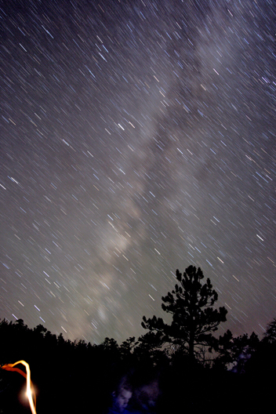

Night Sky At Frisco Peak
These are images taken on Frisco Peak in southern Utah. Frisco peaks about 9600 ft. I was about 9000 ft. when I took these.
|  |  |
| Star trails on Frisco
Co-worker Chris and a light trail from a flashlight can be seen in the foreground. One 10 min. exposure ISO 800, f/3.5, Canon Rebel XTi, Sigma 15-30mm @ 15mm Click "here" for a hi-res image. |
Star trails on Frisco
One 23 min. exposure ISO 800, f/3.5, Canon Rebel XTi, Sigma 15-30mm @ 15mm Click "here" for a hi-res image. |
 |
 |
| Star trails around polaris
One 10 min. exposure ISO 800, f/3.5, Canon Rebel XTi, Sigma 15-30mm @ 15mm Click "here" for a hi-res image. |
The Observatory Crew and The Stars
One 30 sec. exposure ISO 800, f/1.8, Canon Rebel XTi, Sigma 15-30mm @ 15mm Click "here" for a hi-res image. |
 |
|
| Milky Way above Frisco
One 15 sec exposure ISO 1600, f/1.8, Canon Rebel XTi, Canon 50mm lens Click "here" for a hi-res image and animated GIF of the Milky Way moving. |
|
The Parker Mountains and surrounding areas in Southern Utah are some of the last true dark sky sites left in the country. Efforts to keep it that way are in progress in Capitol Reef and Bryce Canyon National Parks. Help out by reducing outside lights that point skyward and shield outside lights to reduce stray light from reaching into the sky.